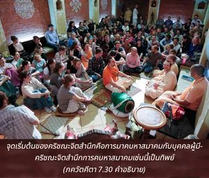

พวกที่มีจิตสำนึกสมบูรณ์ในข้า ผู้รู้จักข้าองค์ภควานฺสูงสุดว่าเป็นหลักในการบริหารปรากฏการณ์ทางวัตถุ บริหารเหล่าเทวดา และพิธีบูชาทั้งหลายสามารถเข้าใจและรู้ถึงข้าบุคลิกภาพสูงสุดแห่งพระเจ้า แม้ขณะที่ตาย

บุคคลปฏิบัติในกฺฤษฺณจิตสำนึกไม่เบี่ยงเบนจากวิถีทางในการเข้าใจบุคลิกภาพสูงสุดแห่งพระเจ้าอย่างสมบูรณ์ ด้วยการคบหาสมาคมทิพย์ในกฺฤษฺณจิตสำนึก เขาสามารถเข้าใจว่าองค์ภควานฺทรงเป็นหลักในการบริหารปรากฏการณ์ทางวัตถุ และบริหารแม้เหล่าเทวดาได้อย่างไร จากการคบหาสมาคมทิพย์เช่นนี้เขาค่อยๆ มีความมั่นใจต่อองค์ภควานฺ และในขณะตายบุคคลในกฺฤษฺณจิตสำนึกเช่นนี้จะไม่มีวันลืมองค์กฺฤษฺณ โดยธรรมชาติเขาจะได้รับการส่งเสริมไปยังดาวเคราะห์ขององค์ภควานฺ โคโลก วฺฤนฺทาวน
บทที่เจ็ดนี้อธิบายว่าเราสามารถจะมีกฺฤษฺณจิตสำนึกอย่างสมบูรณ์ได้อย่างไร จุดเริ่มต้นของกฺฤษฺณจิตสำนึก คือ การมาคบหาสมาคมกับบุคคลผู้มีกฺฤษฺณจิตสำนึก การคบหาสมาคมเช่นนี้เป็นทิพย์จะทำให้เราไปสัมผัสกับองค์ภควานฺโดยตรง และด้วยพระกรุณาธิคุณขององค์ภควานฺเราสามารถเข้าใจองค์กฺฤษฺณได้ว่าทรงเป็นบุคลิกภาพสูงสุดแห่งพระเจ้า ในขณะเดียวกันเราสามารถเข้าใจสถานภาพพื้นฐานอันแท้จริงของสิ่งมีชีวิต สิ่งมีชีวิตลืมองค์กฺฤษฺณ และมาถูกกิจกรรมทางวัตถุพันธนาการได้อย่างไร จากการค่อยๆ พัฒนากฺฤษฺณจิตสำนึกด้วยการคบหาสมาคมกับกัลยาณมิตร สิ่งมีชีวิตสามารถเข้าใจว่าเนื่องจากลืมองค์กฺฤษฺณ เราจึงมาอยู่ในสภาวะตามกฎแห่งธรรมชาติวัตถุ และยังเข้าใจอีกว่าชีวิตในร่างวัตถุนี้เป็นโอกาสที่จะเรียกกฺฤษฺณจิตสำนึกกลับคืนมา จึงควรใช้สอยประโยชน์อย่างเต็มที่เพื่อให้ได้รับพระเมตตาอันหาที่สุดมิได้จากองค์ภควานฺ
ได้สนทนากันหลายประเด็นในบทนี้ เช่น บุคคลผู้อยู่ในความทุกข์ บุคคลผู้ชอบถาม บุคคลผู้ต้องการสิ่งจำเป็นทางวัตถุ ความรู้แห่ง พฺรหฺมนฺ ความรู้แห่ง ปรมาตฺมา ความหลุดพ้นจากการเกิด การตาย และโรคภัยไข้เจ็บ และการบูชาองค์ภควานฺ อย่างไรก็ดี ผู้ที่พัฒนาในกฺฤษฺณจิตสำนึกจริงๆ จะไม่สนใจกับวิธีต่างๆ เหล่านี้ เขาเพียงแต่ปฏิบัติตนในกิจกรรมของกฺฤษฺณจิตสำนึกโดยตรง และบรรลุถึงสถานภาพพื้นฐานอันแท้จริงของตนเองว่า เป็นผู้รับใช้นิรันดรขององค์ศฺรีกฺฤษฺณในสภาวะเช่นนี้เขาจะมีความยินดีในการสดับฟัง และสรรเสริญองค์ภควานฺในการอุทิศตนเสียสละรับใช้ด้วยความบริสุทธิ์ และมั่นใจว่าจากการกระทำเช่นนี้จุดมุ่งหมายทั้งหมดของเขาจะบรรลุผลสำเร็จ ความศรัทธาอันแรงกล้าเช่นนี้เรียกว่า ทฺฤฒ-วฺรต ซึ่งเป็นจุดเริ่มต้นของ ภกฺติ-โยค หรือการรับใช้ทิพย์ด้วยความรัก นี่คือข้อสรุปของพระคัมภีร์ทั้งหลาย บทที่เจ็ดของ ภควัท-คีตา เป็นเนื้อหาสาระแห่งความมุ่งมั่นนี้